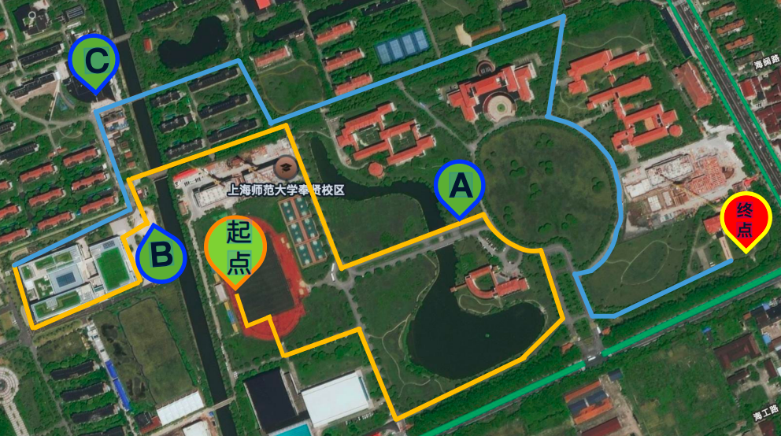

04AUG
步履时光·健康同行3.50 km · 45 分钟
完成
上海师大 · 教职工健步走
上海师范大学教职工趣味挑战赛 · 3.50 km

点位 1 · 起步站：托球平衡挑战
扫码成功后直接拍照提交，无需额外步骤。
SHNU WALK 2026
上海师范大学教职工趣味挑战赛 · 3.50 km · 3/3 点位完成
PATCH-WALK-260804
上海师大校园 · 一起走出好状态
SHNU WALK LOG
SHNU WALK / 我的
产品设计部 · 活力探索者
连续打卡 6 天请对准当前点位标牌上的二维码，扫码成功后直接拍照上传。
照片已上传，继续沿路线前往下一站。